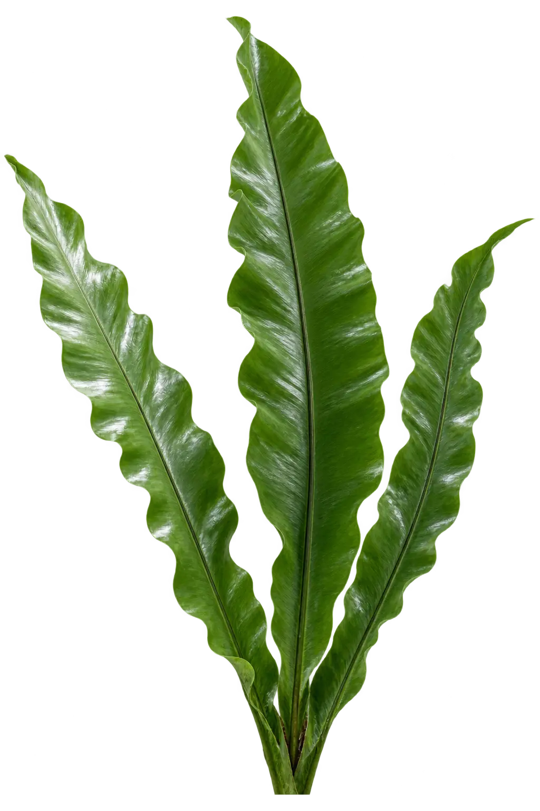
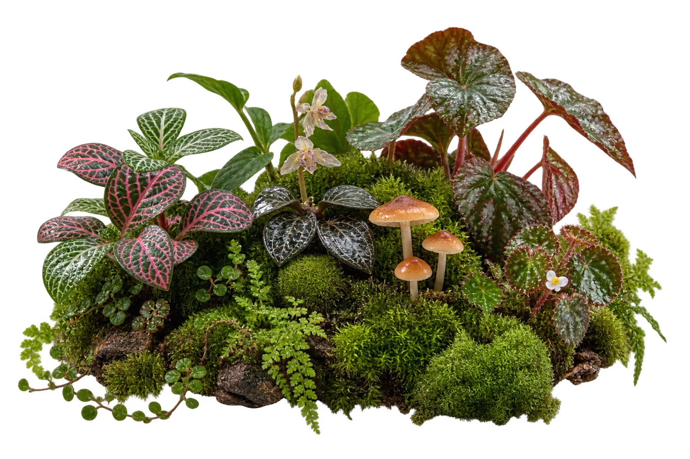
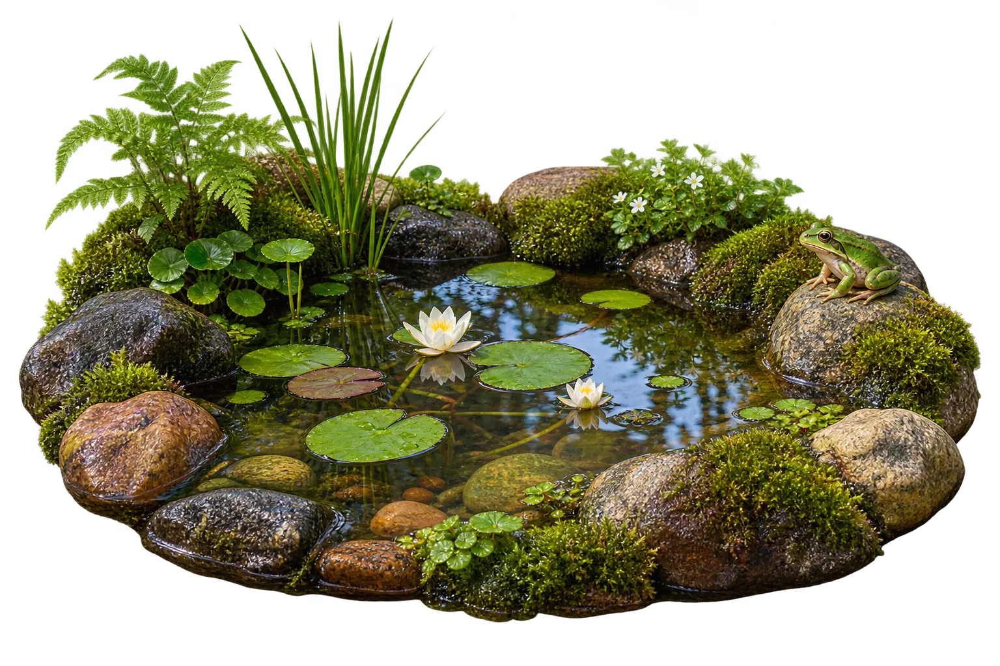
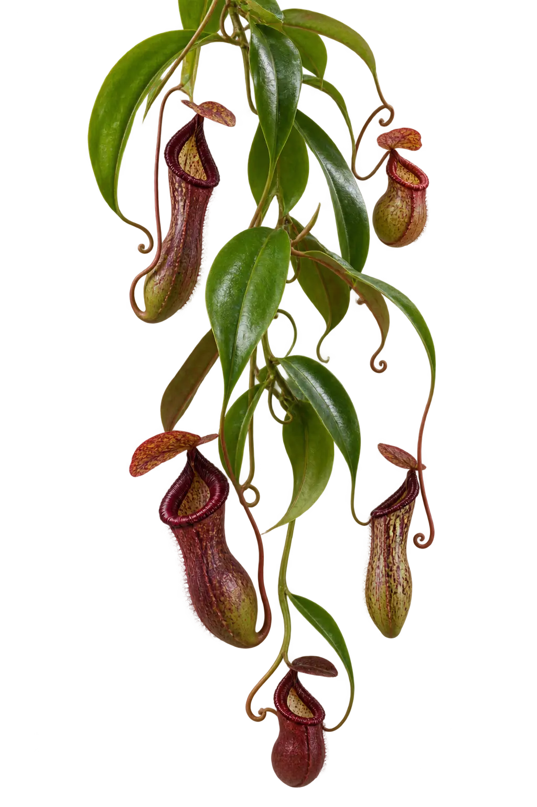
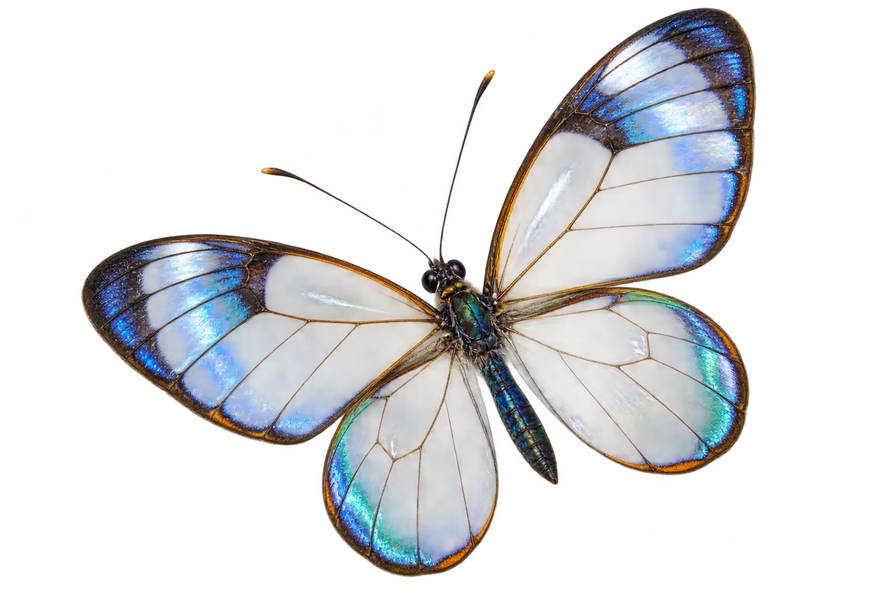
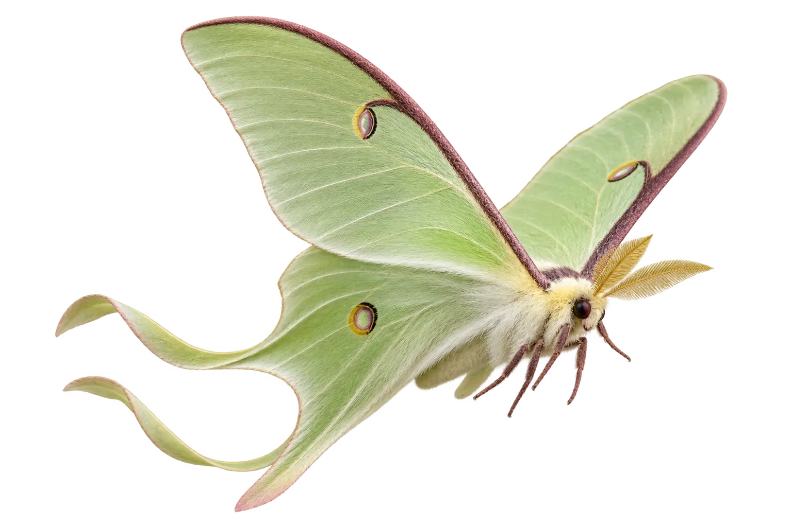

Digital Terrarium
JEAN / LIVING SYSTEM 06
HABITAT STABLE
A WORLD SMALL ENOUGH TO NOTICE
Keep a little
weather
alive.
A closed-loop habitat with independently living layers. Change its climate, wake its residents, and watch the glass remember.






HUMIDITY78%
BIODIVERSITY24
LIGHT62%